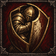
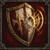

王大谋 · 入队时
王大谋 · 入队时大哥借我
3 AP／12 疲劳／冷却 3 轮
持盾与一名相邻队员互相掩护：双方近战防御各 +5，分别持续至自己下次回合开始。护卫类临时近防只取最高值。
33 名伙伴 · 99 项技能 · 入队两项，个人成长再解锁一项。阿飞使用独立转职技能。
王大谋 · 入队时3 AP／12 疲劳／冷却 3 轮
持盾与一名相邻队员互相掩护：双方近战防御各 +5，分别持续至自己下次回合开始。护卫类临时近防只取最高值。
 王大谋 · 入队时
王大谋 · 入队时被动，按条件生效
持盾且 2 格内有至少两名其他可行动队员时，决心 +8，近战武器攻击的护甲伤害 +10%。
 王大谋 · 个人成长后
王大谋 · 个人成长后被动，按条件生效
大谋在队时，已解锁主题成员的招募费用八折，最多省 200；每 7 日一次，仅成功雇佣消耗机会，不改变成员解锁和刷新间隔。
 午夜抹抹茶 · 入队时
午夜抹抹茶 · 入队时被动，按条件生效
抹茶在队时，原版行军或扎营维修每累计实际消耗 7 工具，返还 1 工具；每日最多返还 3。技能和交易消耗不计入，返还不重复累计。
 午夜抹抹茶 · 入队时
午夜抹抹茶 · 入队时3 AP／10 疲劳／冷却 2 轮
标记 4 格内可见敌人两轮；下一次己方单体武器攻击命中 +10，尝试后消耗。同一人只保留一个标记。
 午夜抹抹茶 · 个人成长后
午夜抹抹茶 · 个人成长后4 AP／15 疲劳／冷却 3 轮
3 格内一名其他队员，下一次单体武器技能少耗 8 疲劳，最低 0；其两次回合结束后到期。优惠取最高一份。
 小酒瓶 · 入队时
小酒瓶 · 入队时4 AP／18 疲劳／冷却 2 轮
以单手近战武器的普通单体招式攻击，命中 +10；攻击后近战防御 -5，直到自己下次回合开始。命中或落空都会进入冷却。
 小酒瓶 · 入队时
小酒瓶 · 入队时被动，按条件生效
从第 5 轮起，近战武器攻击伤害 +10%，每次近战武器技能额外消耗 3 疲劳。瓶队突破同样适用。
 小酒瓶 · 个人成长后
小酒瓶 · 个人成长后被动，按条件生效
每轮首次攻击本轮已被其他队员单体武器命中的敌人时，命中 +5；尝试后消耗，不适用于范围攻击。
 白小帅子 · 入队时
白小帅子 · 入队时4 AP／16 疲劳／冷却 3 轮
自己和 3 格内队员下一次回合开始额外恢复 8 疲劳，并获得决心 +5 至该回合结束。
 白小帅子 · 入队时
白小帅子 · 入队时被动，按条件生效
2 格内没有可行动队员时决心 -8；持盾且与队员相邻时，被攻击时近防 +4。
 白小帅子 · 个人成长后
白小帅子 · 个人成长后3 AP／12 疲劳／冷却 2 轮
持盾守门至自己下次回合开始：不能主动移动，近防 +4，并免疫期间的推拉位移。伤害与眩晕照常。
 李李超欧 · 入队时
李李超欧 · 入队时4 AP／20 疲劳／每战一次
没有相邻敌人时使用；至自己下次回合开始，敌方单体攻击若有另一名合法队员目标，就不能选中自己。没有替代目标时仍可被攻击。主动攻击会解除；范围攻击不受影响。
 李李超欧 · 入队时
李李超欧 · 入队时被动，按条件生效
单体武器每轮首次命中获得一层聚光，每轮首次落空失去一层；最多三层，每层远攻 +3、决心 +3，战后清零。
 李李超欧 · 个人成长后
李李超欧 · 个人成长后被动，按条件生效
士气检定获得至少 20% 的原版重掷机会；与其他重掷来源取较高值。不重掷命中、伤害和掉落。
 小月牙 · 入队时
小月牙 · 入队时被动，按条件生效
小月牙在队时，每日首次在城镇商店成功购买食物享受 15% 折扣，最多省 30 克朗。取消、买不起及无空位不消耗机会；不影响出售。
 小月牙 · 入队时
小月牙 · 入队时被动，按条件生效
单体远程武器攻击切换到与上次不同的敌人时，命中 +8，每轮一次。首次射击不触发；落空也记录目标。
 小月牙 · 个人成长后
小月牙 · 个人成长后被动，按条件生效
每战一次：自己回合开始时，若处于动摇或崩溃，恢复一级士气。不能解除逃跑、魅惑或眩晕。
 余初九 · 入队时
余初九 · 入队时3 AP／12 疲劳／冷却 2 轮
干扰 3 格内可见的人类或绿皮，使其近战命中 -8，直到目标下次回合结束。不影响亡灵、野兽及免疫恐惧的敌人。同名效果不叠加。
 余初九 · 入队时
余初九 · 入队时被动，按条件生效
与可行动的阿飞相距不超过 2 格时，决心 +10。阿飞未出战或失去行动能力时，依次由王大谋、午夜抹抹茶代任。
 余初九 · 个人成长后
余初九 · 个人成长后3 AP／15 疲劳／每战一次
与相邻同高、可行动的己方队员换位，免脱离攻击。双方不得定身、眩晕、不可移动或免疫换位。
 小鱼贝壳 · 入队时
小鱼贝壳 · 入队时2 AP／0 疲劳／每战一次
每战一次，立即消除 15 点累积疲劳；随后两次自己回合开始时，疲劳恢复量各减少 5。疲劳为零时不能使用。此技能不回复生命。
 小鱼贝壳 · 入队时
小鱼贝壳 · 入队时被动，按条件生效
与至少一名可行动、未持盾的己方队员相邻时，被攻击时近战防御 +6。不随队员数量叠加。
 小鱼贝壳 · 个人成长后
小鱼贝壳 · 个人成长后4 AP／20 疲劳／冷却 3 轮
持盾守住原位保护相邻队员，直到自己下次回合开始。下一次敌方单体近战攻击若也能合法攻击自己，则转由自己承受，伤害减少 15%；落空也消耗保护。
 王怼怼 · 入队时
王怼怼 · 入队时4 AP／15 疲劳／冷却 3 轮
阿飞未出战或无法行动时，为自己与 3 格内队员提供近防 +5、决心 +10，持续到受益者第二次回合结束。阿飞恢复后不可再次发令。
 王怼怼 · 入队时
王怼怼 · 入队时被动，按条件生效
每战首次在 3 格内亲眼见到阿飞使用豪气冲天或飞碟号令时，恢复 8 疲劳；本轮下一次单体武器命中 -5。使用怼一句可提前清除惩罚。
 王怼怼 · 个人成长后
王怼怼 · 个人成长后3 AP／10 疲劳／冷却 2 轮
鼓励 3 格内一名其他队员，近防 +4、决心 +6，持续至其下次回合结束；同时清除自己恐飞派的命中惩罚。
 老蔡 · 入队时
老蔡 · 入队时4 AP／18 疲劳／冷却 3 轮
持盾鼓励自己与当前相邻的可行动队员：近战防御 +6、决心 +6，分别持续至受益者下次回合开始。护卫类临时加成只取最高值。
 老蔡 · 入队时
老蔡 · 入队时被动，按条件生效
第一轮开始时，自己与当时相邻的可行动队员先攻 +12，仅持续第一轮，不影响后续援军。重复布阵不叠加。
 老蔡 · 个人成长后
老蔡 · 个人成长后被动，按条件生效
同一轮已有两名不同队员以单体武器命中过某敌人后，对它的下一次单体近战命中 +10，每轮一次。
 亿口甜筒 · 入队时
亿口甜筒 · 入队时4 AP／16 疲劳／冷却 3 轮
掩护 3 格内一名其他队员：远防 +8；其下一次回合开始额外恢复 4 疲劳，效果持续至该回合结束。本版不额外射箭或消耗弹药。
被动，按条件生效
本轮实际走过至少两格普通移动后，首次单体远程武器命中 +7。专属位移和换位不计步数。
 亿口甜筒 · 个人成长后
亿口甜筒 · 个人成长后被动，按条件生效
侦察经验使战场视野 +1；第一轮先攻 +10。当前版本不在世界地图生成路线情报或任务。
 小宁 · 入队时
小宁 · 入队时3 AP／10 疲劳／冷却 2 轮
干扰 3 格内可见人类或绿皮：先攻 -20、远攻 -5，至目标下次回合结束；免疫恐惧者不受影响。
 小宁 · 入队时
小宁 · 入队时被动，按条件生效
本次行动尚未移动时，单体远程武器命中 +6；移动后失效。
 小宁 · 个人成长后
小宁 · 个人成长后被动，按条件生效
每轮首次单体远程攻击落空后，下一次单体远程命中 +8，最迟下轮结束清除。
 小胖徐不快乐 · 入队时
小胖徐不快乐 · 入队时3 AP／12 疲劳／冷却 2 轮
给相邻队员近防 +4、决心 +4，至其第二次回合结束。完成个人成长后近防变为 +6。
 小胖徐不快乐 · 入队时
小胖徐不快乐 · 入队时被动，按条件生效
按稳街舞的步点：持盾且与可行动队员相邻时，被攻击时近防 +4。
 小胖徐不快乐 · 个人成长后
小胖徐不快乐 · 个人成长后被动，按条件生效
每轮首次承受敌方直接武器攻击并存活后恢复 3 疲劳；持续伤害不触发。
 大鹅 · 入队时
大鹅 · 入队时3 AP／15 疲劳／冷却 2 轮
持盾守住原位，自己与使用时相邻的队员远程防御 +6，直到大鹅下次回合开始。离开原位、失去盾牌或行动能力时失效；队友离开相邻位置时不受益。
 大鹅 · 入队时
大鹅 · 入队时被动，按条件生效
至少与一名敌人相邻，且相邻的其他可行动队员数不少于相邻敌人数时，决心 +5、近战武器命中 +5。
 大鹅 · 个人成长后
大鹅 · 个人成长后4 AP／20 疲劳／冷却 3 轮
用单手近战武器对相邻敌人猛击，命中 -5、护甲伤害 +20%。当前版本原地出手，不附带冲锋位移或击退。
 蔓越莓 · 入队时
蔓越莓 · 入队时3 AP／10 疲劳／冷却 2 轮
给 4 格内可见敌人留下红线；下一次己方单体远程武器命中 +8，尝试后消耗，最多持续两轮。自己只保留一个红线记号。
 蔓越莓 · 入队时
蔓越莓 · 入队时被动，按条件生效
攻击与己方队员相邻的敌人时，每轮首次单体远程命中 +5。
 蔓越莓 · 个人成长后
蔓越莓 · 个人成长后被动，按条件生效
每轮首次以单体远程武器命中与队员相邻的敌人后，恢复 2 疲劳。
 小哈尼 · 入队时
小哈尼 · 入队时3 AP／10 疲劳／冷却 2 轮
照应 2 格内一名其他队员，近防 +3、决心 +8，至其下次回合结束。
 小哈尼 · 入队时
小哈尼 · 入队时被动，按条件生效
与可行动队员相距不超过 2 格时，决心 +6。
 小哈尼 · 个人成长后
小哈尼 · 个人成长后被动，按条件生效
自己回合结束时，若本次行动没有使用主动技能且没有相邻敌人，恢复 4 疲劳，每轮一次。
 可可 · 入队时
可可 · 入队时4 AP／16 疲劳／冷却 3 轮
持盾照应一名相邻队员：近战防御 +4、远程防御 +8，持续到其第二次回合结束。双方须保持相邻且可可可行动并持盾。护卫类临时加成只取最高值。
 可可 · 入队时
可可 · 入队时被动，按条件生效
保可梦仍生效时，被保护队员躲过敌方武器攻击，可可消除 4 疲劳。每轮最多一次，每战最多消除 20。
 可可 · 个人成长后
可可 · 个人成长后被动，按条件生效
持盾保护自己人：与至少一名生命不超过一半的可行动队员相邻时，被攻击时近防 +4、决心 +6。现版不提供远程误伤减免。
 余想 · 入队时
余想 · 入队时4 AP／18 疲劳／冷却 2 轮
至自己下次回合开始，近防与远防各 +8、先攻 -10；期间每轮首次受到敌方直接武器伤害后恢复 4 疲劳。
 余想 · 入队时
余想 · 入队时被动，按条件生效
与至少两名可行动队员相邻时，被攻击时近防 +4，决心 +6。
 余想 · 个人成长后
余想 · 个人成长后被动，按条件生效
自己回合开始时，若有一名上次回合开始时不相邻的可行动队员，恢复 5 疲劳。第一回合仅记录，不恢复；每轮一次。
 童猪 · 入队时
童猪 · 入队时3 AP／12 疲劳／冷却 2 轮，每战至多 2 次
消耗一层看懂，干扰 3 格内人类或绿皮的下一次单体武器命中 -10；尝试后消耗，最多持续至其第二次回合结束。每战最多两次。
 童猪 · 入队时
童猪 · 入队时被动，按条件生效
4 格内可见敌人连续两次使用同一武器技能时，获得一层看懂；最多两层，每轮最多一层，战后清零。
 童猪 · 个人成长后
童猪 · 个人成长后4 AP／15 疲劳／冷却 3 轮
给自己与 3 格内队员下一次单体武器技能减免 4 疲劳；自动消耗最多两层看懂，每层再减 2，最低 0。两次回合结束后过期；优惠取最高。
 美伢 · 入队时
美伢 · 入队时4 AP／20 疲劳／冷却 2 轮
安全移动至相邻同高空地，免脱离攻击；落点相邻队员先攻 +12，至各自下次回合结束。当前版本为一步舞位。
 美伢 · 入队时
美伢 · 入队时被动，按条件生效
相邻队员单体近战落空时记住敌人；本轮下一次攻击该敌人近战命中 +6，每轮一次。
 美伢 · 个人成长后
美伢 · 个人成长后2 AP／12 疲劳／冷却 1 轮
本次行动已单体近战命中过敌人后，可安全撤至相邻同高空地，免脱离攻击。每轮一次，定身时不可用。
 玩蛇 · 入队时
玩蛇 · 入队时4 AP／16 疲劳／冷却 1 轮
单手近战武器试招：生命与护甲伤害均为普通招式的 80%；命中后使敌人近攻 -6 至其下次回合结束。每轮一次。
 玩蛇 · 入队时
玩蛇 · 入队时被动，按条件生效
每轮首次受到敌方单体近战攻击后记住攻击者；对它的下一次单体近战命中 +6，至自己下次回合结束失效。
 玩蛇 · 个人成长后
玩蛇 · 个人成长后被动，按条件生效
本次行动以普通单体近战命中后，下一次蛇形试招少耗 4 疲劳；发动后清除，不赠送攻击。
 涂涂 · 入队时
涂涂 · 入队时4 AP／18 疲劳／每战一次
与相邻同高且可行动的队员安全换位，免脱离攻击；双方不得定身。当前版本采用原版换位，不同时平移两人。
 涂涂 · 入队时
涂涂 · 入队时被动，按条件生效
相邻可行动队员生命不超过一半时，决心 +10、被攻击时近防 +5。现版以掩护伤员体现断后，不监听撤退。
 涂涂 · 个人成长后
涂涂 · 个人成长后被动，按条件生效
自己回合结束时，若本次行动只移动或等待且没有相邻敌人，恢复 6 疲劳，每轮一次。旧磨合／闹别扭系统不再使用。
 宋暖阳 · 入队时
宋暖阳 · 入队时3 AP／12 疲劳／冷却 2 轮
缩在掩体后：远防 +12、近防 +3，至自己下次回合开始；期间不能主动移动。
 宋暖阳 · 入队时
宋暖阳 · 入队时被动，按条件生效
开场第一轮自己先攻 +15、视野 +1；后续轮次不再生效。
 宋暖阳 · 个人成长后
宋暖阳 · 个人成长后被动，按条件生效
每轮首次攻击本轮已被其他队员单体武器命中的敌人时，命中 +5。
 溺水小龟 · 入队时
溺水小龟 · 入队时3 AP／14 疲劳／冷却 2 轮
持盾缩入防线，受到的伤害减少 20%，直到自己下次回合开始。期间不能使用武器技能；移动、失盾或失去行动能力会解除保护。
 溺水小龟 · 入队时
溺水小龟 · 入队时被动，按条件生效
持盾且与可行动的阿飞相距不超过 3 格时，决心 +8，每回合疲劳恢复量 +2。阿飞在预备队时无效。
 溺水小龟 · 个人成长后
溺水小龟 · 个人成长后4 AP／16 疲劳／冷却 3 轮
持盾保护相邻队员：近防 +5、远防 +5，至其第二次回合结束。效果要求小龟仍持盾、可行动并保持相邻。
 奶盖 · 入队时
奶盖 · 入队时2 AP／8 疲劳／冷却 3 轮
挑衅相邻且能用近战攻击自己的普通人类，采用原版嘲讽，使其按自身战术优先攻击奶盖。恐惧免疫者无效，不强制移动。
 奶盖 · 入队时
奶盖 · 入队时4 AP／18 疲劳／冷却 3 轮
持盾缩进防线，近防 +8，承受直接武器的生命伤害减少 20%，至自己下次回合开始；不能主动移动或使用武器技能。失盾、被移动或无法行动会解除。
 奶盖 · 个人成长后
奶盖 · 个人成长后被动，按条件生效
每轮首次被敌方单体武器攻击落空，或缩进奶盖期间受直接武器伤害后存活，获得一层返场；下一次投掷命中 +10，最迟下轮结束失效。
 小杰 · 入队时
小杰 · 入队时3 AP／10 疲劳／冷却 2 轮
解除自己或相邻队员的一项普通网或加固网；无网不可使用。不解除眩晕、抓取、藤蔓和伤势。
 小杰 · 入队时
小杰 · 入队时被动，按条件生效
面对带恐惧／魅惑标签的士气检定，额外决心 +15；常规受伤、包围和同伴阵亡检定不加成。
 小杰 · 个人成长后
小杰 · 个人成长后4 AP／15 疲劳／冷却 2 轮，每战至多 2 次
消耗 2 工具，对相邻可束缚人形敌人施加绳扣，使其不能移动至下次回合结束，仍可攻击。每战两次；本版直接施放，不在空地埋隐藏陷阱。
 bula · 入队时
bula · 入队时2 AP／5 疲劳／每战一次
给 3 格内自己或一名队员的下一次投掷武器技能减免 5 疲劳，最低 0，两次回合结束后失效。每战一次，不赠弹药。
被动，按条件生效
bula 在队时，每日首次从城镇商店购买工具、药品或弹药享受 5% 折扣，最多省 30 克朗。只在成功购买时消耗，不影响出售和招募。
 bula · 个人成长后
bula · 个人成长后被动，按条件生效
投掷武器只剩最后一发时，普通投掷命中 +6；每战最多两次。弹药仍正常消耗。
 苏袜 · 入队时
苏袜 · 入队时4 AP／18 疲劳／冷却 2 轮
安全移动至相邻同高空地，免脱离攻击；先攻 +15 至自己下次回合结束。当前版本采用一步踩点。
 苏袜 · 入队时
苏袜 · 入队时被动，按条件生效
自身当前有效先攻高于目标时，单体武器命中 +5，每轮最多两次；相等不触发。
 苏袜 · 个人成长后
苏袜 · 个人成长后3 AP／14 疲劳／冷却 3 轮
远防 +12、近防 +4，至自己下次回合开始；期间不能主动移动，仍可攻击。被迫移动会解除。
 千涵 · 入队时
千涵 · 入队时3 AP／18 疲劳／冷却 3 轮
安全冲至相邻同高空地，免脱离攻击；本次下一次单体近战命中 +8，至当前行动结束失效。当前版本只移动一步。
 千涵 · 入队时
千涵 · 入队时被动，按条件生效
本场首次普通移动完成后恢复 2 疲劳；专属位移、换位和推拉不触发。
 千涵 · 个人成长后
千涵 · 个人成长后被动，按条件生效
本次行动只普通移动或等待，结束时没有相邻敌人，则恢复 8 疲劳，每轮一次。
 王大芷 · 入队时
王大芷 · 入队时4 AP／18 疲劳／冷却 2 轮
持盾稳住幕布：近防 +7，免疫推拉位移，至自己下次回合开始。伤害、网缚和眩晕照常。
 王大芷 · 入队时
王大芷 · 入队时被动，按条件生效
持盾且本次行动未移动时，相邻其他队员被攻击时获得近防 +3；同类站位保护只取最高，不给自己加成。
 王大芷 · 个人成长后
王大芷 · 个人成长后被动，按条件生效
对与至少两名己方队员相邻的敌人，单体近战命中 +5，每轮一次。
 瑶瑶牙 · 入队时
瑶瑶牙 · 入队时6 AP／24 疲劳／冷却 2 轮
以双手近战武器的普通单体招式攻击，命中 -5、护甲伤害 +20%。沿用武器自身射程和特殊伤害。当前版本不附带击退。
 瑶瑶牙 · 入队时
瑶瑶牙 · 入队时被动，按条件生效
使用双手近战武器时，近战武器攻击的护甲伤害 +10%。包括双手斧、剑、锤和长柄；不赋予额外射程。
 瑶瑶牙 · 个人成长后
瑶瑶牙 · 个人成长后被动，按条件生效
本次行动曾移动且结束时距可行动队长不超过 3 格，获得决心 +6，持续至自己下次回合开始。
 羊咩咩 · 入队时
羊咩咩 · 入队时3 AP／18 疲劳／冷却 2 轮
安全绕至相邻同高空地，免脱离攻击；定身时不能发动。当前版本为明确的一步撤位。
 羊咩咩 · 入队时
羊咩咩 · 入队时被动，按条件生效
每轮第二次普通移动完成后恢复 3 疲劳；不会返还行动点，专属位移不计入。
 羊咩咩 · 个人成长后
羊咩咩 · 个人成长后被动，按条件生效
自己回合结束时，为一名相邻且可行动的疲劳最高队员恢复 3 疲劳，每轮一次。本版不在地格留下标记。

陈知含 · 入队时4 AP／16 疲劳／冷却 2 轮
持盾自保：近防 +8，受到的直接武器生命伤害减少 10%，至自己下次回合开始。护甲照常结算。

陈知含 · 入队时被动，按条件生效
持盾时，每轮首次承受敌方单体近战伤害后记住攻击者，本轮再被同一人攻击时近防 +6。
 陈知含 · 个人成长后
陈知含 · 个人成长后4 AP／14 疲劳／每战一次
把准备好的月饼分给自己与 2 格内伙伴：决心 +6，持续至各自第二次回合结束；每战一次。当前版本以战斗准备能力呈现，不消耗世界地图食物。